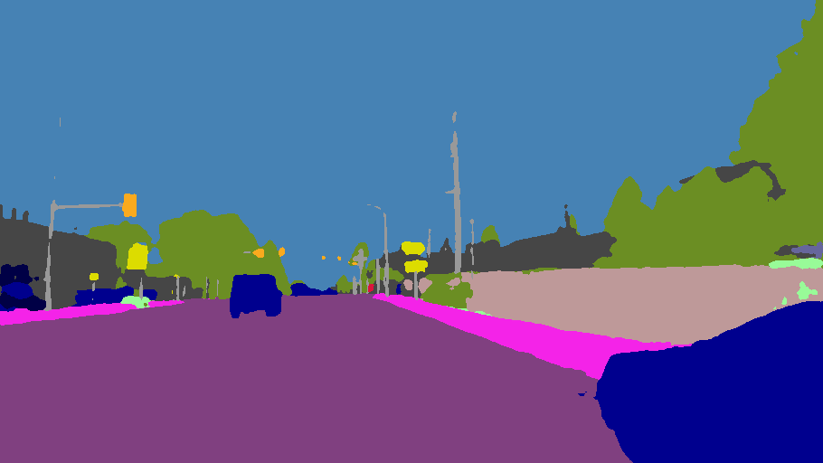

Gavin Allison
Full-Stack Developer • Machine Learning Engineer • Computer Vision Researcher


About Me
Skills

Frontend
When building responsive web applications, I use TypeScript, React, and Tailwind CSS to create clear, intuitive user interfaces. I focus heavily on ensuring these applications can efficiently handle complex data rendering. This guarantees that users maintain straightforward control over their experience.

Backend
To support scalable applications, I develop custom algorithms and back-end logic using Python, TypeScript, and SQL. I connect these systems to relational databases like PostgreSQL. This allows me to reliably manage user profiles, process complex transactions, and ensure accurate data retrieval.

Tools & Workflow
I actively apply Agile methodologies within software development teams for industry projects. I pair Git for strict version control with Docker for consistent modular systems. This guarantees that my applications run reliably across all environments. I also have experience deploying applications using Google Cloud Computing and Vercel hosting.

Machine Learning
My work in AI involves designing and implementing neural networks and predictive models using PyTorch (Python). I also have implemented natural language processing using Google's generative AI with TypeScript. Beyond initial implementation, I optimize hyperparameters and evaluate performance using various explainable accuracy metrics.

Computer Vision
Applying advanced image processing techniques, I build robust object detection and image segmentation pipelines using OpenCV and PyTorch. My research background heavily influences how I evaluate model performance. I quantify the impact of data quality and analyze the distinct variables that affect visual computing outcomes.

Scripting
Beyond building full-stack applications, I write robust shell scripts to automate repetitive tasks. This drastically speeds up my overall development workflow. Completely solving these repeatable problems allows me to focus on the more creative tasks in development like designing systems.
Projects

Stocks App: Full-Stack Dynamic Portfolio Backtesting
A full-stack portfolio tracking and transaction management application built to expand on static record-keeping by simulating dynamic investment strategies. It pairs real historical market data with a custom ledger validation algorithm to accurately record trades and backtest automated schedules.
More Details
Inter-Annotator Agreement on Object Detection Performance
An engineered pipeline designed to quantify how inter-annotator disagreement affects the performance of deep learning computer vision models. We simulated both individual bounding box inaccuracies and low agreement to evaluate the robustness of a YOLOV8 model.
More Details
Semantic Segmentation through Classification Routing
An evaluation of whether splitting a generalized semantic segmentation model into multiple specialized models can match a single generalized model across varying weather conditions. I engineered a classification-routing pipeline to categorize and route images to segmentation models.
More Details